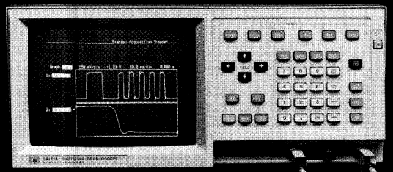

HP 54200A Digitizing Oscilloscope |
The HP 5334A is an advanced digitizing oscilloscope with dual 200 megasample/second digitzers that allow up to 50 MHz single-shot capture, pre-trigger viewing, automatic waveform measurements, up to 27 channels of state triggering, infinite variable persistance, instant hardcopy output, 300 MHz repetitive bandwidth(HP 54201A/D only)
|
Ordering Information |
Pricing |
Last Modified: EST